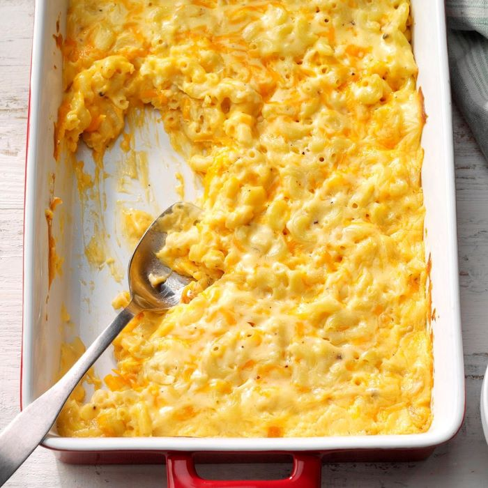

Ingredients
- 2 cups uncooked elbow macaroni
- 1/2 cup butter, cubed
- 1/2 cup all-purpose flour
- 1-1/2 to 2 cups 2% milk
- 1 cup sour cream
- 8 ounces cubed Velveeta
- 1/4 cup grated Parmesan cheese
- 1/2 teaspoon salt
- 1/2 teaspoon ground mustard
- 1/2 teaspoon pepper
Directions
- Cook macaroni according to package directions.
- Meanwhile, preheat oven to 350°. In a large saucepan, melt butter. Stir in flour until smooth. Gradually add 1-1/2 cups milk. Bring to a boil; cook and stir 2 minutes or until thickened. Reduce heat; stir in sour cream, Velveeta, Parmesan cheese, salt, mustard and pepper until smooth and cheese is melted. Add more milk to reach desired consistency.
- Drain macaroni; toss with cheddar cheese. Transfer to a greased 3-qt. baking dish. Stir in cream sauce.
- Bake, uncovered, 35-40 minutes or until golden brown and bubbly.